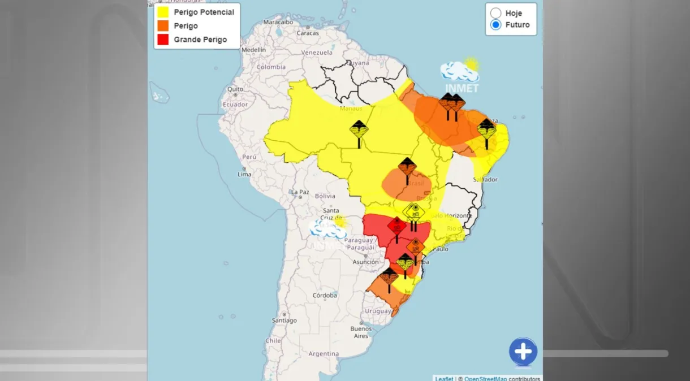

News Polícia flagra idosa de 103 anos dirigindo à noite com a habilitação vencida na Itália Com o documento vencido há dois anos, Giuseppina Molinari foi multada e teve seu carro apreendido, segundo a imprensa local. Mas a idosa não quer abrir mão de sua independência e visita seus conhecidos de bicicleta. Rússia acusa a Ucrânia de intensificar ataques para atrapalhar a eleição no país Duas pessoas morreram depois que mísseis ucranianos atingiram a cidade russa de Belgorod, próximo à fronteira com a Ucrânia. Negociações por cessar-fogo em Gaza serão retomadas neste domingo Chefe do serviço de inteligência de Israel viajará ao Catar para encontrar mediadores; negociação é resposta israelense a proposta do grupo terrorista Hamas que previa troca de todos os reféns e cessar-fogo permanente. PRF e empresas de transporte intensificam combate à importunação sexual em ônibus interestaduais Em 2022, foram 50 registros em todo Brasil. No ano passado, as denúncias quase dobraram.
Clima Calor sufocante: com 60,1ºC, Rio atinge recorde de sensação térmica O Rio de Janeiro bateu neste sábado (16) o recorde de maior sensação térmica já medida pelo sistema Alerta Rio, da prefeitura da capital fluminense. SP pode bater recorde de dia mais quente de março neste fim de semana, diz Climatempo Temperaturas máximas na capital paulista podem passar de 35 graus  Onda de calor sufocante e tempestades: alertas do Inmet atingem 24 estados e o DF Apenas Espírito Santo e Roraima não tem algum tipo de atenção climática do instituto nesta sexta-feira (15) SXSW: Jane Fonda alerta sobre a importância de agir contra a crise climática Atriz agitou a plateia com declarações sobre a degradação do meio ambiente e política
E-Sports CLASSIFICAÇÃO PARA O CHALLENGERS: O CAMINHO PARA O EVENTO DE PROMOÇÃO E REBAIXAMENTO EM MAIO Com o fim das Classificatórias Abertas para o Challengers, estamos com tudo pronto para revelar mais informações sobre a próxima oportunidade de promoção para o torneio. O VALORANT CHAMPIONS 2024 VAI PARA SEUL O próximo Campeão Mundial do VCT será coroado em Seul, na Coreia TUDO QUE VOCÊ PRECISA SABER: MASTERS MADRID As partidas já foram definidas para o primeiro evento global do VALORANT Champions Tour de 2024. De 14 a 24 de março, as oito melhores equipes do mundo vão competir em Madri, na Espanha, pelo título de Campeã do Masters Madrid. TUDO O QUE VOCÊ PRECISA SABER SOBRE A TEMPORADA 2024 DO VCT AMERICAS As 11 principais equipes da América do Norte, LATAM e Brasil continuam a mostrar o nível máximo de habilidade, estratégia e pura determinação de VALORANT.